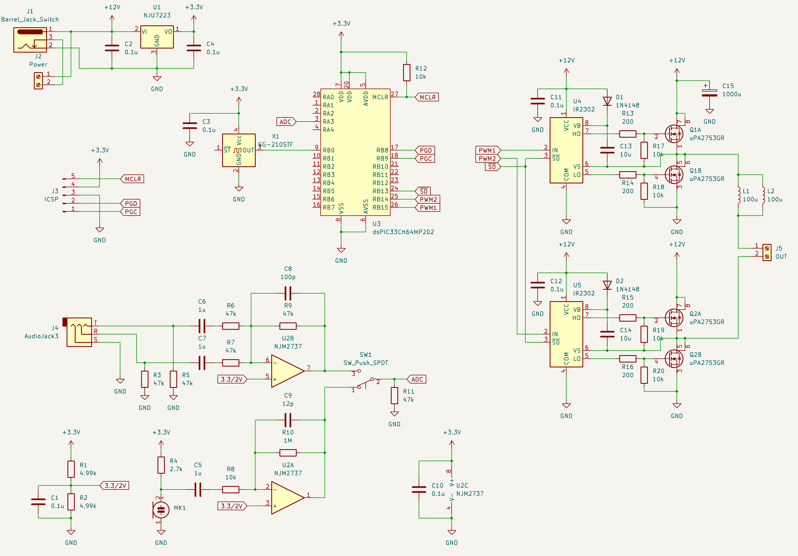
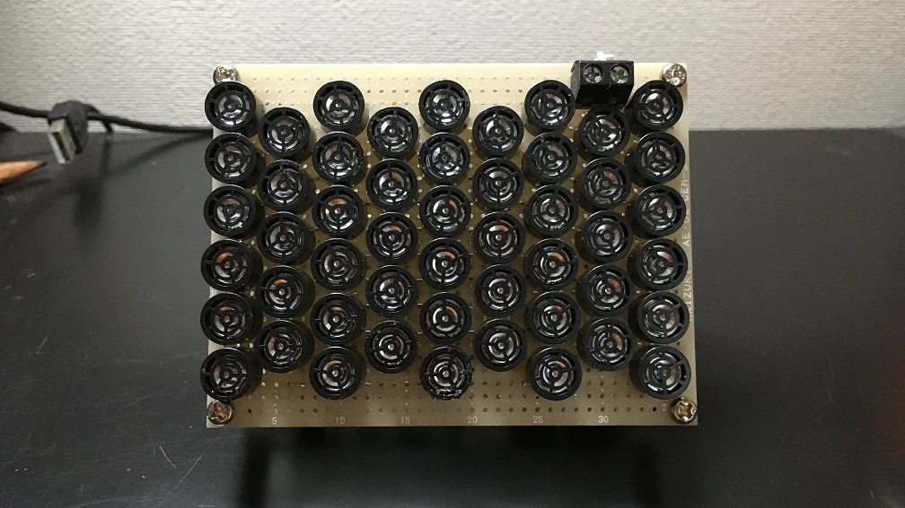
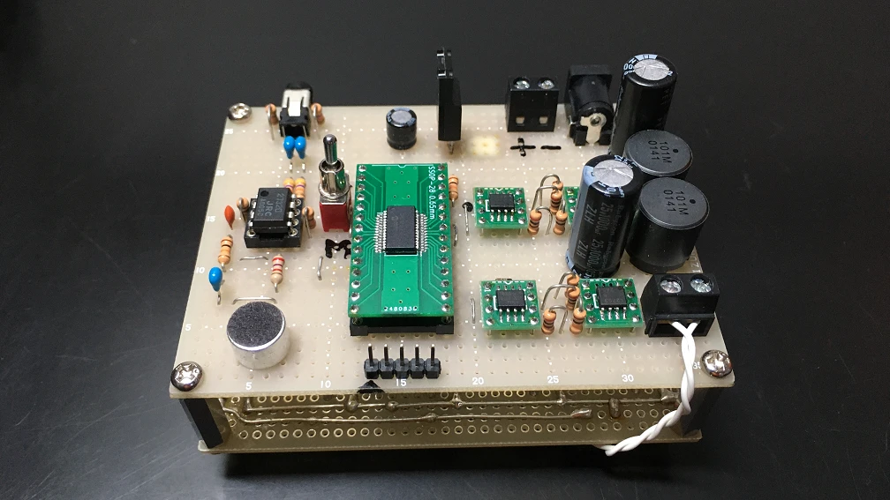

非常に鋭い指向性を持ったスピーカーであるパラメトリックスピーカーを作りました。50個の超音波振動子を並列にしてHブリッジで駆動しています。150Hz～6kHz 程度の帯域を持ち、スピーカーの正面であれば100m以上離れたところまで音を届けることができます。

制御回路の回路図
dsPICで音声信号を処理したのちにPWM変調をおこない、H ブリッジ回路で超音波振動子を駆動しています。超音波振動子は容量性の負荷であるためインダクタを直列に入れることで共振させ、効率の向上を狙っています。
入力にはライン入力とコンデンサマイクの二つを使えるようにしました。ライン入力はステレオをミックスしてモノラルに変換しています。ライン入力、マイク入力のどちらもADC に入力するために中点電圧をシフトしています。
超音波振動子のアレイは、面として機能できるほどに指向性が強まり、音質も改善します。このため多くの小さな振動子をできるだけ密に並べるとよいです。振動子の出力同士を強め合わせて平面波を作り出す必要があるので、振動子の極性をすべてそろえて接続する必要があります。

超音波振動子のアレイ

制御回路
dsPIC33CH64MPで信号処理と全体の制御を行っています。このdsPICは、最大12bit、3.5MspsのADCを搭載しています。今回は 3.2MHzでサンプリングし、64倍オーバーサンプリングとすることで50kHz、15bitの分解能を得ています。オーバーサンプリング処理はADCでハードウェア的に行われます。このため CPUの負担を低減できます。出力のPWM変調もデューティー分解能を15bitにできたので、高い分解能の出力を期待できます。
オーバーサンプリング後の信号を、カットオフ周波数が6kHzのFIRフィルタに通しています。これはPWM変調を超音波発振子の中心周波数である40kHz で行っているため、高い音を送信しようとすると歪みが大きくなるためです。大きな歪みを許容すれば帯域を広げることもできますが、聞き取りづらくなるためこの程度の帯域が無難と思われます。
入力信号のレベルが低いときには、不必要な超音波の出力を避けるためPWM変調を止める処理も行っています。
今回dsPICで行っているフィルタ処理とPWM 変調は、アナログ回路でも簡単に組むことができますが、デジタル信号処理であれば定数の変更が簡単なため、音質向上の工夫をいろいろ試せるのではないかと思いdsPICを選びました。
パラメトリックスピーカーは強力な超音波によって可聴音を作り出しています。たとえ何も聞こえなくてもスピーカー正面には強力なエネルギーが出ているので、至近距離や狭い室内では耳の防護が必要です。PWM 変調で可聴音を発生させている原理上、どんなに小さな可聴音を送信しているときでも発生している超音波は常に最大振幅になります。不用意に人に向けることの無いようにしなければいけません。